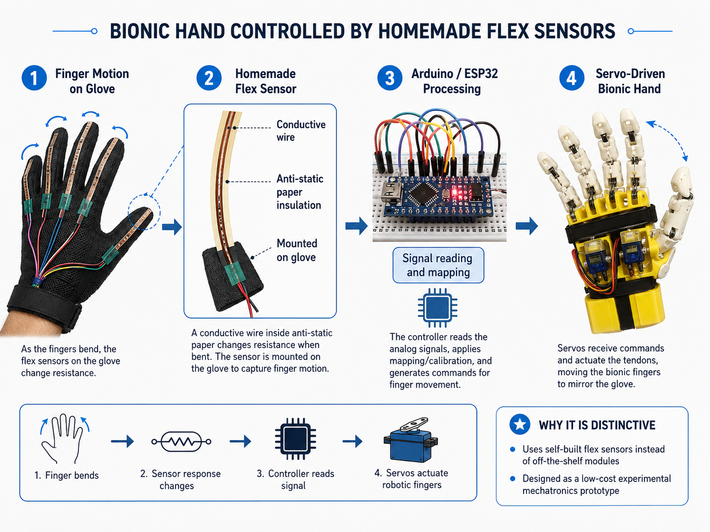
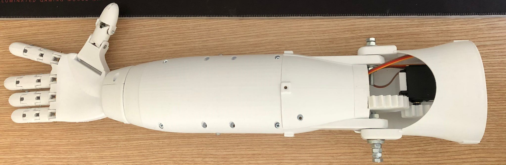
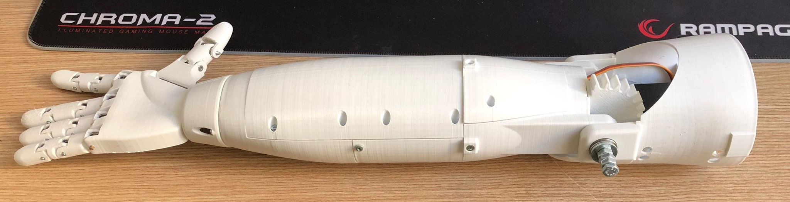

Finger motion
Servos wind and release strings connected to the finger joints, creating tendon-like bending through cable tension.
A low-cost mechatronics prototype combining a 3D-printed hand and forearm, servo-driven finger actuation, Arduino control and an experimental glove-input concept based on homemade flex sensors.
Project Brief
The project explored how a glove-controlled input system could drive a multi-joint robotic hand. The mechanical structure, servo actuation, embedded control and experimental sensing approach were developed as one integrated prototype.
The surviving public archive contains the physical prototype, demonstration videos, a controller sketch and the project media. It should be read as a hands-on mechatronics proof of concept rather than a finished assistive device.
Control Concept
The central idea was to measure bending on a wearable glove, map the sensor response to motor commands and reproduce the gesture through the bionic hand.

Homemade Sensor
Instead of purchasing commercial flex sensors, the sensing strips were built manually using conductive wire and anti-static paper insulation. The strips were mounted on a glove so that finger bending produced a changing electrical response.
This was an experimental, low-cost sensing method. The aim was not calibrated measurement accuracy, but enough repeatable response to test glove-driven robotic finger control.
Mechanical Design


Actuation
Servos wind and release strings connected to the finger joints, creating tendon-like bending through cable tension.
The prototype includes articulated finger motion together with wrist and elbow movement.
The system used multiple servos, bearings and a 3D-printed PLA structure developed through iterative physical assembly.
Physical Tests
Both videos are embedded without audio and play silently to keep the portfolio experience unobtrusive.
Physical setup showing the controller, wiring, glove and robotic hand during motion testing.
Prototype test illustrating the relationship between glove movement and robotic hand actuation.
Software
The archived Arduino sketch defines independent motion routines for the index finger, middle finger, ring finger, wrist and elbow. These routines are executed sequentially with timed delays.
The surviving code therefore documents actuator-level testing rather than a complete final glove-control pipeline. It is included as evidence of the embedded-control stage used during prototype development.
Limitations
The public archive is incomplete and does not include the full original development history. The homemade sensing approach was not calibrated to medical or industrial standards.
The project demonstrates mechanical design, prototyping, embedded actuation and low-cost sensor experimentation. It should not be interpreted as a clinically validated prosthetic system.
Project Link